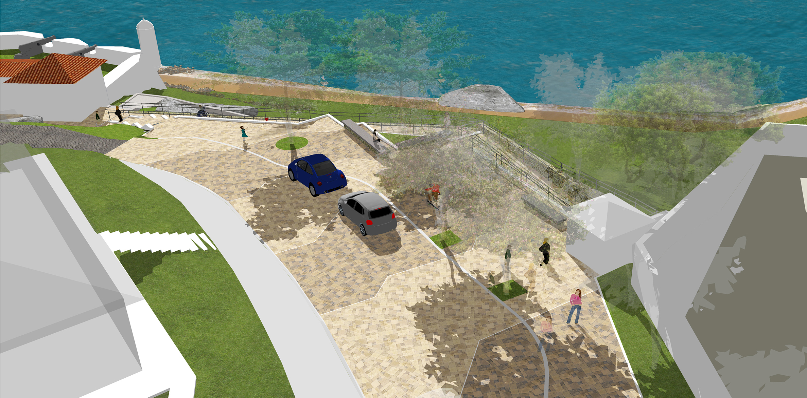
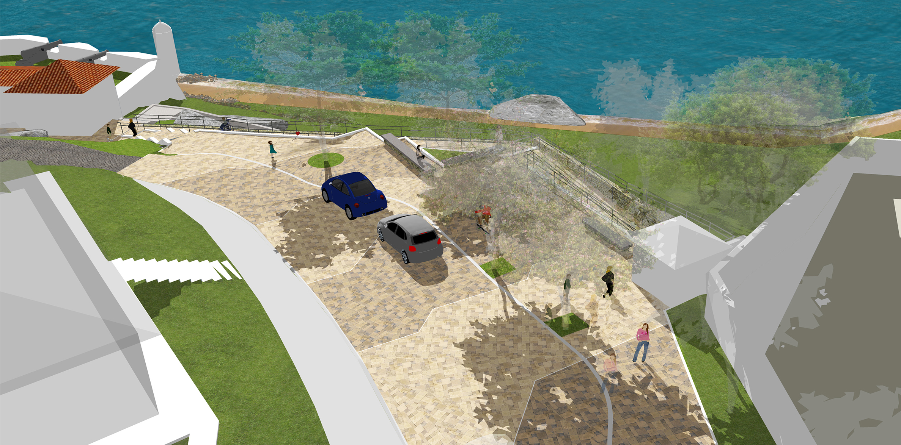

- Studio: Studio Eduardo Barra
- Type: Heritage/Landscape
- Roles: Designer, Drafter, Researcher, Presentation, Landscape Construction Details
- Year: 2016
Comissioned by the National Heritage Institute (IPHAN), the work consisted in revitalizing seven XVII century portuguese fortifications across the island of Florianópolis. Varying in scale, position in the now urban island and acessibility, all seven fortifications were to have its surroundings restored in a way that would create value to the historical buildings, protect the indigenous flora and make the whole complex inviting to everyone, putting the fortresses in the touristic route.

 
